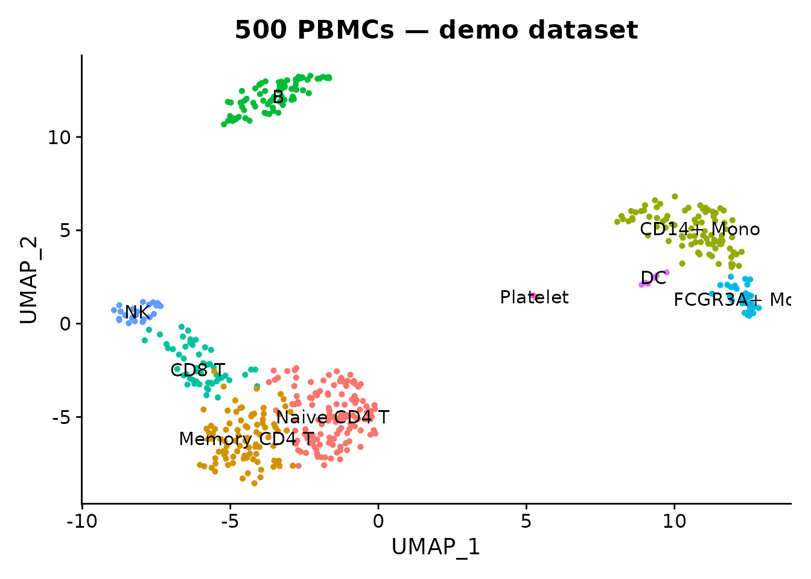

scConvert provides three conversion modes with different speed and memory trade-offs. This vignette explains when to use each, and compares Seurat serialization formats for disk space.
Three conversion modes
obj <- readRDS(system.file("extdata", "pbmc_demo.rds", package = "scConvert"))
DimPlot(obj, group.by = "seurat_annotations", label = TRUE, pt.size = 1) +
ggtitle("500 PBMCs — demo dataset") + NoLegend()
1. In-memory (hub path)
The default mode loads data into a Seurat object, then saves to the target format. This supports all format pairs but requires the full dataset in RAM.
# Seurat object -> h5ad (in-memory)
h5ad_path <- file.path(tempdir(), "pbmc_hub.h5ad")
t1 <- system.time(writeH5AD(obj, h5ad_path, verbose = FALSE))
cat("In-memory write:", round(t1["elapsed"], 2), "s\n")
#> In-memory write: 3 sUse in-memory conversion when you need to manipulate the data in R, or when the source/destination formats don’t share the same on-disk layout.
2. On-disk streaming (R)
For Zarr conversions, scConvert can copy data field-by-field between files without ever constructing a Seurat object. This keeps memory usage constant regardless of dataset size.
# h5ad -> zarr (streaming, no Seurat object in memory)
zarr_path <- file.path(tempdir(), "pbmc_stream.zarr")
t2 <- system.time(H5ADToZarr(h5ad_path, zarr_path, stream = TRUE, verbose = FALSE))
cat("Streaming h5ad -> zarr:", round(t2["elapsed"], 2), "s\n")
#> Streaming h5ad -> zarr: 0.98 sAvailable streaming converters:
| Function | Direction |
|---|---|
H5ADToZarr() |
h5ad → zarr |
ZarrToH5AD() |
zarr → h5ad |
H5SeuratToZarr() |
h5Seurat → zarr |
ZarrToH5Seurat() |
zarr → h5Seurat |
All accept stream = TRUE (the default) to bypass the
Seurat intermediate.
3. C binary (on-disk, fastest)
For HDF5-based format pairs (h5ad, h5Seurat, h5mu, Loom), the compiled C binary copies datasets directly at the HDF5 level. It uses constant memory and is typically 10–50x faster than the R path.
h5s_path <- file.path(tempdir(), "pbmc_cli.h5seurat")
writeH5Seurat(obj, h5s_path, overwrite = TRUE, verbose = FALSE)
h5ad_cli <- file.path(tempdir(), "pbmc_cli.h5ad")
t3 <- system.time(scConvert_cli(h5s_path, h5ad_cli, verbose = FALSE))
#> Validating h5Seurat file
cat("C binary h5seurat -> h5ad:", round(t3["elapsed"], 2), "s\n")
#> C binary h5seurat -> h5ad: 4.01 sBuild the binary with cd src && make (requires
HDF5 headers).
Performance at scale
On synthetic sparse h5ad files (20K genes, 5% density), median of 3 runs on Apple M4 Max:
| Operation | 100K cells | 500K cells |
|---|---|---|
| C binary (h5ad ↔︎ h5seurat) | 0.19 s | 0.63 s |
| Streaming (h5ad → zarr) | ~1 s | ~5 s |
| In-memory read h5ad | 2.56 s | 12.68 s |
| In-memory write h5ad (gzip=0) | 0.61 s | 3.29 s |
The C binary stays under 1 second even at 500K cells because it never decompresses the expression matrix — it copies HDF5 chunks directly.
Seurat serialization formats
A Seurat object can be saved in several R-native formats. All preserve the full object structure (assays, reductions, graphs, metadata, images).
rds_path <- file.path(tempdir(), "pbmc.rds")
h5s_path2 <- file.path(tempdir(), "pbmc.h5seurat")
saveRDS(obj, rds_path)
writeH5Seurat(obj, h5s_path2, overwrite = TRUE, verbose = FALSE)
sizes <- data.frame(
Format = character(), Size_KB = numeric(), stringsAsFactors = FALSE
)
sizes <- rbind(sizes, data.frame(Format = "RDS (.rds)", Size_KB = file.size(rds_path) / 1024))
sizes <- rbind(sizes, data.frame(Format = "h5Seurat (.h5seurat)", Size_KB = file.size(h5s_path2) / 1024))
if (requireNamespace("qs2", quietly = TRUE)) {
qs2_path <- file.path(tempdir(), "pbmc.qs2")
qs2::qs_save(obj, qs2_path)
sizes <- rbind(sizes, data.frame(Format = "qs2 (.qs2)", Size_KB = file.size(qs2_path) / 1024))
}
# Also save as RData
rdata_path <- file.path(tempdir(), "pbmc.RData")
save(obj, file = rdata_path)
sizes <- rbind(sizes, data.frame(Format = "RData (.RData)", Size_KB = file.size(rdata_path) / 1024))
sizes$Size_MB <- round(sizes$Size_KB / 1024, 2)
sizes$Size_KB <- round(sizes$Size_KB, 0)
knitr::kable(sizes[, c("Format", "Size_MB")], col.names = c("Format", "Size (MB)"))| Format | Size (MB) |
|---|---|
| RDS (.rds) | 1.57 |
| h5Seurat (.h5seurat) | 2.16 |
| qs2 (.qs2) | 1.52 |
| RData (.RData) | 1.57 |
Format comparison
| Format | Compression | Random access | Language |
|---|---|---|---|
| RDS | gzip | No (full load) | R only |
| RData | gzip | No (full load) | R only |
| qs2 | zstd | No (full load) | R only |
| h5Seurat | gzip (HDF5) | Yes (selective load) | R, C |
Key differences:
-
qs2 is among the fastest R serialization formats
(2–5x faster than
saveRDS), with similar or better compression. Use it for local caching. The original qs package was archived from CRAN in 2026 and superseded by qs2. - h5Seurat is the only format that supports selective loading — read just one assay or one reduction without loading the entire object.
- RDS / RData are universally available but slower for large objects.
Exchange formats
For sharing data with Python or other tools, use cross-language formats:
h5ad_path2 <- file.path(tempdir(), "pbmc_exchange.h5ad")
writeH5AD(obj, h5ad_path2, verbose = FALSE)
loom_path <- file.path(tempdir(), "pbmc_exchange.loom")
writeLoom(obj, loom_path, verbose = FALSE)
#> Adding col attribute CellID
#> Adding col attribute orig.ident
#> Adding col attribute nCount_RNA
#> Adding col attribute nFeature_RNA
#> Adding col attribute seurat_annotations
#> Adding col attribute percent.mt
#> Adding col attribute RNA_snn_res.0.5
#> Adding col attribute seurat_clusters
#> Adding row attribute Gene
#> Adding row attribute vst.mean
#> Adding row attribute vst.variance
#> Adding row attribute vst.variance.expected
#> Adding row attribute vst.variance.standardized
#> Adding row attribute vst.variable
zarr_path2 <- file.path(tempdir(), "pbmc_exchange.zarr")
writeZarr(obj, zarr_path2, verbose = FALSE)
exchange <- data.frame(
Format = c("h5ad (AnnData)", "Loom", "Zarr"),
Size_MB = round(c(
file.size(h5ad_path2),
file.size(loom_path),
sum(file.info(list.files(zarr_path2, recursive = TRUE, full.names = TRUE))$size)
) / 1024^2, 2),
Ecosystem = c("scanpy, CELLxGENE", "loompy, velocyto", "cloud / AnnData")
)
knitr::kable(exchange)| Format | Size_MB | Ecosystem |
|---|---|---|
| h5ad (AnnData) | 0.89 | scanpy, CELLxGENE |
| Loom | 2.20 | loompy, velocyto |
| Zarr | 0.64 | cloud / AnnData |
When to use what
| Goal | Recommended |
|---|---|
| Fast local save/load in R |
qs2::qs_save() / qs2::qs_read()
|
| Selective loading (big data) |
writeH5Seurat() / readH5Seurat()
|
| Share with Python |
writeH5AD() or C binary |
| Batch convert many files | C binary (scconvert) |
| Cloud storage | writeZarr() |
| Convert without loading |
scConvert_cli() or streaming converters |